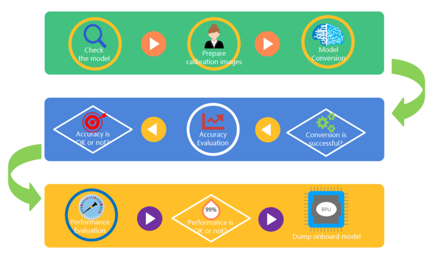
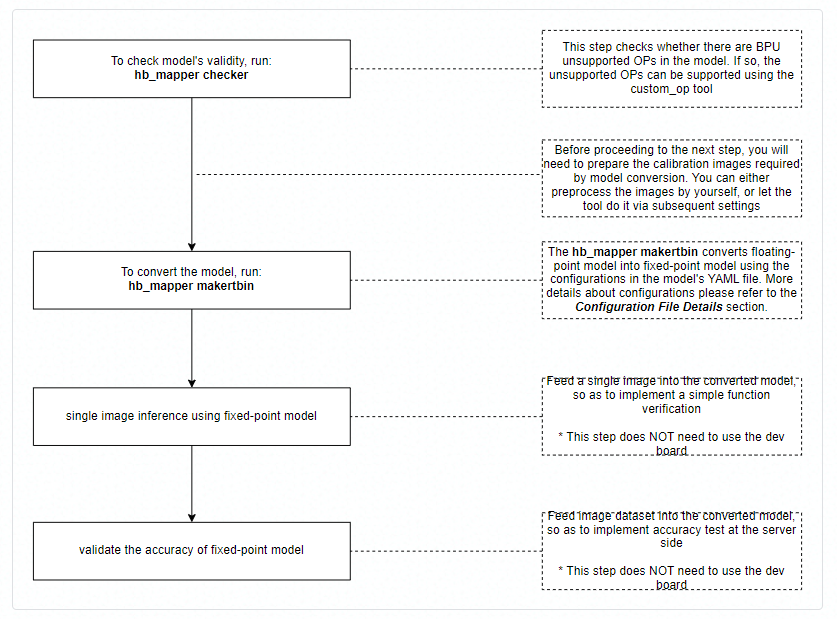

1. Introduction To The Model Conversion Process
This chapter explains how to convert the Caffe, TensorFlow, PyTorch etc. opensource ML frameworks trained FPMs 1 into the Horizon hardwares supported HGMs 2 models.
In most cases, the threshold values and weights etc. of the FPMs users either obtained from either the opensource ML frameworks or trained by themselves are floating-point numbers (float32) and each number occupies 4 bytes. However, by converting the floating-point numbers into fixed-point numbers (int8), each number occupies only 1 byte, thus the computation volume in embedded runtime can be dramatically reduced. Therefore, converting floating-point models into fixed-point models with no loss or very small loss is a significant performance boost.
Typically, model conversion can be divided into the following steps:
Check if there are unsupported OPs 3 in the models to be converted.
Prepare 20~100 images for calibration use at the conversion stage.
Convert the FPMs into HGMs using the FPM conversion tools.
Evaluate the performance and accuracy of the converted HGMs, in order to ensure that there isn’t huge difference in model accuracy before and after the conversion.
Run models in simulator/dev board to validate model performance and accuracy.
Also please refer to below flowchart to learn more about the conversion process:
Functions of tools correspond with conversion process:
1.1. Check The Model (hb_mapper checker)
Before converting the FPMs into the HGMs,
we should check if there are Horizon hardwares unsupported OPs in the FPMs using the hb_mapper checker tool.
If yes, the tool will report the unsupported OP(s).
Usage of the hb_mapper checker tool please refer to the: Model Check Tool section.
The error report when there is an unsupported OP should be as follows:
ERROR HorizonRT not support these cpu operators: {name of the unsupported OP}
Tip
More information about Horizon hardware supported OPs please refer to the: supported_op_list_and_restrictions_release Excel table in the supported_op_list_and_restrictions/ directory.
The tool will print out a OP list in which also displays whether the OPs will run in CPU or BPU, and users can go ahead proceeding the next step. See below:
hb_mapper checker --model-type caffe --proto mobilenet_deploy.prototxt \
--model mobilenet.caffemodel --output ./mobilenet_checker.log --march bernoulli2
2021-12-16 11:01:50,471 INFO Start hb_mapper....
2021-12-16 11:01:50,472 INFO hb_mapper version 1.3.69
...
fc7 BPU id(0) HzSQuantizedConv
prob CPU -- Softmax
2021-12-16 11:01:56,844 INFO [Fri Jan 8 17:33:53 2021] End to Horizon NN Model Convert.
2021-12-16 11:01:56,847 INFO ONNX model output num : 1
2021-12-16 11:01:56,857 INFO End model checking....
Tip
In case there is unsupported OP, you can either contact Horizon’s technical personnel to learn more about OP development, or add the unsupported OP using the Custom OP feature.
1.2. Prepare Calibration Images
When converting the FPMs, you need to prepare 20~100 images for calibration use at the calibration stage. Input image formats vary widely as input types and layouts differ. Because both original (e.g. *.JPG etc.) and the processed images are valid, you can either feed the calibration images used in model training, or feed your own processed images.
Users are recommended to pre-process the calibration images, finishing adjusting image channel (BGR/RGB), data layout (NHWC/NCHW),
image size and padding (Resize&Padding) etc. operations, specify the preprcess_on parameter in the yaml file (i.e. mobilenet_config.yaml)
as False, so that the tool can feed images into calibration stage after loading them via binary files.
Below takes the MobileNet as an example, displaying the required transformer operations:
transformers = [
ShortSideResizeTransformer(short_size=256), # pad the short side to 256, in order to maintain length-width ratio
CenterCropTransformer(crop_size=224), # crop a 224\*224 image from the center of the image
HWC2CHWTransformer(), # switch data layout from NHWC to NCHW
RGB2BGRTransformer(data_format="CHW"), # switch color channel from RGB to BGR
ScaleTransformer(scale_value=255), # switch number range from 0-1 to 0-255
]
Tip
If the color space in model training is bgr/rgb, then the color space of those images that will pass into the tool at the calibration stage must also be bgr/rgb, the tool can proceed the color conversion from bgr/rgb to yuv444/gray internally.
For example, in the above code block, the actual input of the MobileNet model is specified as nv12, but after running the 02_preprocess.sh script, color space will be switched to bgr, and the remaining conversion from bgr to nv12 will be automatically executed by the tool.
1.3. Model Conversion (hb_mapper makertbin)
When you confirm that the FPM can be successfully converted using the hb_mapper checker tool,
the next step is to actually convert the FPM into a Horizon hardware supported HGM using the hb_mapper makertbin tool.
This tool requires users to pass in the type (caffe / onnx ) of the model to be converted and a configuration file
(*.yaml) in which contains conversion requirements. Details of configuration please refer to the:
Explain The Configuration File section.
When the model conversion process is over, a similarity between the FPM and HGM will be generated,
users can therefore judge the similarity before and after conversion based on the Cosine Similarity field.
As shown below, The Cosine Similarity value equals to 0.999979, very close to 1,
hence the performance of the HGM should be very close to that of the FPM before the conversion.
config_file="./mobilenet_config.yaml"
model_type="caffe"
# build model
hb_mapper makertbin --config ${config_file} \
--model-type ${model_type}
2021-12-16 11:03:42,852 INFO Start hb_mapper....
2021-12-16 11:03:42,853 INFO hb_mapper version 1.3.69
[==================================================] 100%
2021-12-16 11:04:16,389 INFO [Thu Dec 16 11:04:16 2021] End to compile the model with march bernoulli2.
2021-12-16 11:04:16,391 INFO The converted model node information:
==============================================================================================================
Node ON Subgraph Type Cosine Similarity Threshold
--------------------------------------------------------------------------------------------------------------
HZ_PREPROCESS_FOR_data BPU id(0) HzSQuantizedPreprocess 0.999929 127.000000
conv1 BPU id(0) HzSQuantizedConv 0.999852 2.568122
conv2_1/dw BPU id(0) HzSQuantizedConv 0.999241 2.036977
conv2_1/sep BPU id(0) HzSQuantizedConv 0.996084 4.482006
conv2_2/dw BPU id(0) HzSQuantizedConv 0.996833 3.537661
conv2_2/sep BPU id(0) HzSQuantizedConv 0.995409 2.794526
conv3_1/dw BPU id(0) HzSQuantizedConv 0.992831 1.414860
conv3_1/sep BPU id(0) HzSQuantizedConv 0.981622 2.180573
conv3_2/dw BPU id(0) HzSQuantizedConv 0.993764 1.772657
conv3_2/sep BPU id(0) HzSQuantizedConv 0.992963 1.845023
conv4_1/dw BPU id(0) HzSQuantizedConv 0.985572 1.047720
conv4_1/sep BPU id(0) HzSQuantizedConv 0.988300 1.743298
conv4_2/dw BPU id(0) HzSQuantizedConv 0.990737 0.997055
conv4_2/sep BPU id(0) HzSQuantizedConv 0.991850 1.583990
conv5_1/dw BPU id(0) HzSQuantizedConv 0.986620 0.827319
conv5_1/sep BPU id(0) HzSQuantizedConv 0.988756 1.273479
conv5_2/dw BPU id(0) HzSQuantizedConv 0.988272 0.775731
conv5_2/sep BPU id(0) HzSQuantizedConv 0.980215 1.538180
conv5_3/dw BPU id(0) HzSQuantizedConv 0.983713 0.789739
conv5_3/sep BPU id(0) HzSQuantizedConv 0.973204 1.938199
conv5_4/dw BPU id(0) HzSQuantizedConv 0.979052 0.995223
conv5_4/sep BPU id(0) HzSQuantizedConv 0.959301 2.168504
conv5_5/dw BPU id(0) HzSQuantizedConv 0.977367 1.929827
conv5_5/sep BPU id(0) HzSQuantizedConv 0.955805 3.573682
conv5_6/dw BPU id(0) HzSQuantizedConv 0.977817 2.473310
conv5_6/sep BPU id(0) HzSQuantizedConv 0.979358 4.113862
conv6/dw BPU id(0) HzSQuantizedConv 0.997310 0.664771
conv6/sep BPU id(0) HzSQuantizedConv 0.976856 0.990642
pool6 BPU id(0) HzSQuantizedConv 0.987635 11.520256
fc7 BPU id(0) HzSQuantizedConv 0.990641 5.852959
prob CPU -- Softmax 0.835067 --
2021-12-16 11:04:16,392 INFO The quantify model output:
========================
Node CosineSimilarity
------------------------
prob 0.934038
2021-12-16 11:04:16,392 INFO [Thu Dec 16 11:04:16 2021] End to Horizon NN Model Convert.
Note
The above CosineSimilarity refers to the very first image among calibration images, hence it cannot fully represent
the model accuracy similarity before and after the conversion.
A folder (by default named model_output) in which contains the following files will be generated after successful model conversion:
the original floating-point model (FPM): ***_original_float_model.onnx.
the optimized floating-point model: ***_optimized_float_model.onnx.
the fixed-point model: ***_quantized_model.onnx.
the hybrid model to run in dev board (HGM): ***.bin.
These model files are the output at some key stages during the conversion and will be used in the subsequent steps.
Note
Use the 03_classification/01_mobilenet/mapper/03_build.sh script to experience the
hb_mapper makertbintool.If you want to learn more about the model conversion workflow, please read the: Convert The Model section of the Horizon AI Toolchain User Guide document.
If you want to learn more about calibration methods, please read the: Model Accuracy Analysis And Optimization section of the Horizon AI Toolchain User Guide document.
1.4. Single Image Inference
The accuracy of the model conversion generated HGM must be evaluated.
To do so, users are expected to have good understanding of the input/output structures of the model; can accurately pre-process model input images and post-process model output and code their own model execution script. Users can refer to the sample code in Horizon’s model conversion sample package. Code logic of model accuracy validation please refer to below code block:
from horizon_tc_ui import HB_ONNXRuntime
sess = HB_ONNXRuntime(model_file=FLAGS.model)
output = sess.run([output_name], {input_name: image_data})
As shown above, this single image inference script is used for validating model accuracy by inferencing a zebra image.
It converts RGB format into nv12 in the pre-process, then passes in the image and inference
using the HB_ONNXRuntime command and prints out TOP5 most possible classes.
The output of the script is shown as follows, the most possible class is: label: 340.
I0108 18:11:47.398328 140427646048000 cls_inference.py:89] The input picture is classified to be:
label 340: prob 0.97
label 292: prob 0.02
label 282: prob 0.00
label 83: prob 0.00
Classes in the label use ImageNet label classes,
you can also find it in the 01_common/test_data/classes.txt file in the Horizon Model Conversion Sample Package.
As the corresponding class of 340 is zebra, the inference result is correct.
1.5. Model Accuracy Evaluations
It’s insufficient to determine model accuracy by single image inference, so there must be script to evalute model accuracy after the conversion.
To do so, users must code to enable the model to loop inference images, compare the inference and standard results, so as to get model accuracy results.
In model accuracy evaluations, images must be pre-processed, model output must be post-processed,
so here below we provide a Python script as a sample.
The logic of this script is the same as that of in single image inference, yet it must run the entire dataset.
The script can evaluate model output results and dump evaluation results.
Because it takes a long time to run the script, users can determine the number of threads to run the evaluation by
specifying the PARALLEL_PROCESS_NUM environment variable.
The output of the script is shown as follows:
===REPORT-START{MAPPER-EVAL}===
0.7011
===REPORT-END{MAPPER-EVAL}===
As you can see that the accuracy of the converted HGM is 0.7011.
Note
Model accuracy may vary slightly due to the differences of operating systems and dependencies.
Model accuracy may vary slightly due to iteration.
If users find that there is accuracy loss after model conversion, please contact Horizon’s technical personnel to get the FPM2HGM Conversion Accuracy Loss Positioning Checklist to further investigate the cause of accuracy loss.
1.6. Model Performance Evaluations
Model’s frame rate when running in dev board is considered one of the important performance indicators.
To save developers’ trouble of dev board installation and configuration, the hb_perf tool provides
the ability to analyze HGM performance.
In below MobileNetv1 sample, after running the hb_perf mobilenetv1_224x224_nv12.bin command,
users will be able to find the mobilenetv1_224x224_nv12.html HGM analysis file in the
hb_perf_result/mobilenetv1_224x224_nv12/ folder.
[horizon@gpu-dev model_output]$ hb_perf mobilenetv1_224x224_nv12.bin
2021-06-24 10:55:08,324 INFO Start hb_perf....
2021-06-24 10:55:08,324 INFO hb_perf version 1.3.15
2021-06-24 10:55:08,335 INFO ********* mobilenetv1_224x224_nv12 perf **********
2021-06-24 10:55:08,432 INFO draw graph png finished.
2021-06-24 10:55:08,450 INFO get bpu model succeeded.
2021-06-24 10:55:08,650 INFO get perf info succeeded.
2021-06-24 10:55:08,650 WARNING bpu model don't have per-layer perf info.
2021-06-24 10:55:08,650 WARNING if you need per-layer perf info please enable[compiler_parameters.debug:True] when use makertbin.
2021-06-24 10:55:08,662 INFO generating html...
2021-06-24 10:55:08,662 INFO html generation finished.
[horizon@gpu-dev model_output]$ cd hb_perf_result/mobilenetv1_224x224_nv12/
[horizon@gpu-dev mobilenetv1_224x224_nv12]$ ll
total 8832
-rw-rw-r-- 1 horizon horizon 2258629 Jan 8 18:16 MOBILENET_subgraph_0.html
-rw-rw-r-- 1 horizon horizon 3053 Jan 8 18:16 MOBILENET_subgraph_0.json
-rw-rw-r-- 1 horizon horizon 604 Jan 8 18:16 mobilenetv1_224x224_nv12
-rw-rw-r-- 1 horizon horizon 1327 Jan 8 18:16 mobilenetv1_224x224_nv12.html
-rw-rw-r-- 1 horizon horizon 18849 Jan 8 18:16 mobilenetv1_224x224_nv12.png
-rw-rw-r-- 1 horizon horizon 6750208 Jan 8 18:16 temp.hbm
In the mobilenetv1_224x224_nv12.html file, we can see the overall model performance data. When a model is sliced into multiple segments, an individual performance analysis report on each segment running in BPU will be generated.

Performance indicators in the above graph respectively refer to:
Model Name: model name.BPU Model Latency(ms): model’s overall time consumption (by millisecond).Model DDR Occupation(Mb per frame): model’s overall operating memory occupation.Loaded Bytes per Frame: model’s loaded bytes per frame.Stored Bytes per Frame: model’s stored bytes per frame.
Note
Note that the abovementioned BPU Model Latency(ms) refers only to the time consumption of the part of model which is going to be executed by the BPU,
however, the time consumption of the other part of model (if any) which is going to be executed by the CPU won’t count.
1.7. [Reference] Supported Calibration Methods
Presently Horizon can support the following calibration methods:
max
max refers to a calibration method to automatically choose the max value in quantized layer as threshold value. It can on the one hand cause oversized quantization particle granularity, but on the other hand it can also cause less saturation points than KL calibration method. Therefore, to sum up, it applies to those neural network models with more discrete data distribution.
KL
KL refers to a TensorRT inspired solution (http://on-demand.gputechconf.com/gtc/2017/presentation/s7310-8-bit-inference-with-tensorrt.pdf) who uses the KL entropy value to traverse the data distribution of each quantized layer and determines threshold value by searching for the lowest KL entropy value. This method can cause more saturation points and smaller quantization particle granularity and therefore has better effects than max for those neural network models with more concentrated data distribution.
1.8. [Reference] OP List
If you want to learn more about the existing Horizon AI Toolchain supported Caffe OPs, please refer to the: supported_op_list_and_restrictions_release Excel table in the supported_op_list_and_restrictions/ path.